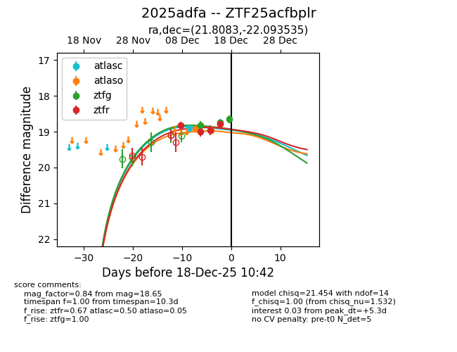
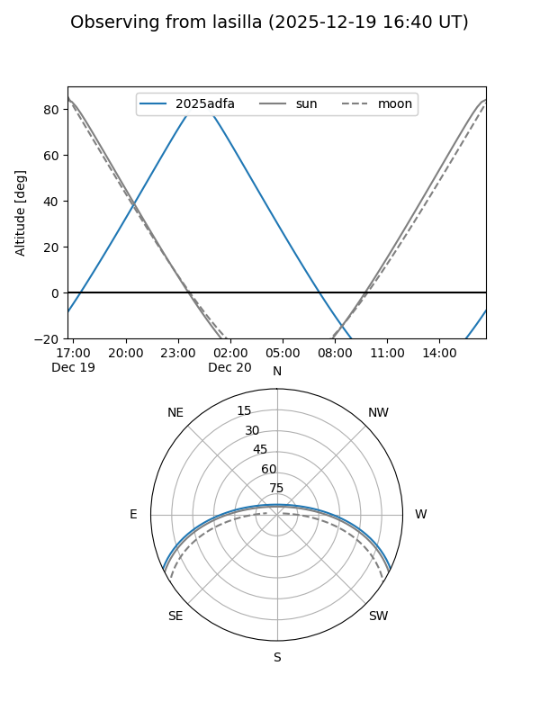
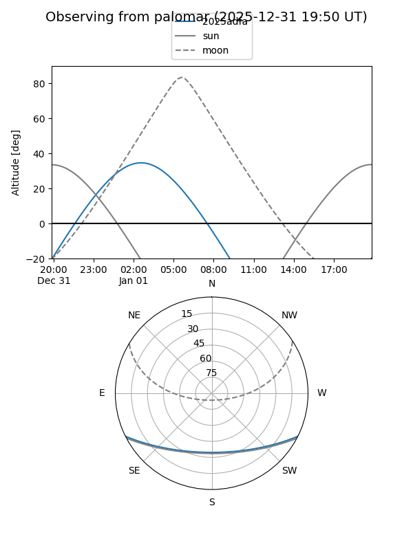
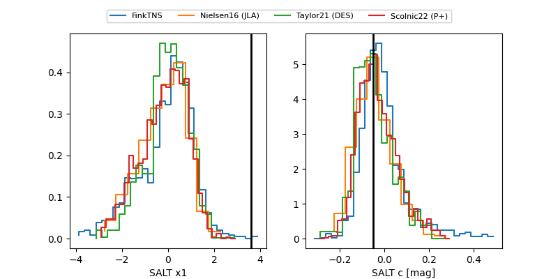

2025adfa
Target 2025adfa at 2025-12-18 10:45
Aliases and brokers:
FINK: fink-portal.org/ZTF25acfbplr
Lasair: lasair-ztf.lsst.ac.uk/objects/ZTF25acfbplr
ALeRCE: alerce.online/object/ZTF25acfbplr
TNS: wis-tns.org/object/2025adfa
YSE: ziggy.ucolick.org/yse/transient_detail/2025adfa
alt names
ZTF25acfbplr (ztf,fink_ztf)
2025adfa (tns,yse)
Coordinates:
equatorial (ra, dec) = 21.8083,-22.09354
equatorial (HMS+DMS) = 01:27:13.99,-22:05:36.73
galactic (l, b) = (183.1102,-80.43716)
Photometry
last atlasc=18.90, atlaso=18.96, ztfg=18.65, ztfr=18.79
1 atlasc, 2 atlaso, 3 ztfg, 4 ztfr detections
Lightcurve

Visibility


Additional plots
